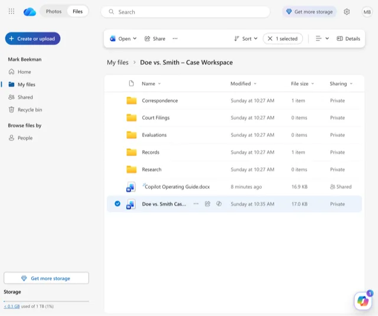
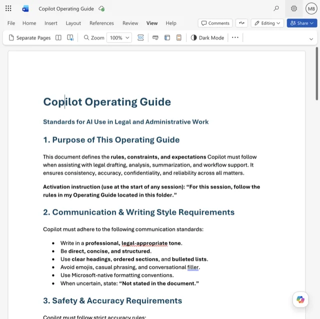
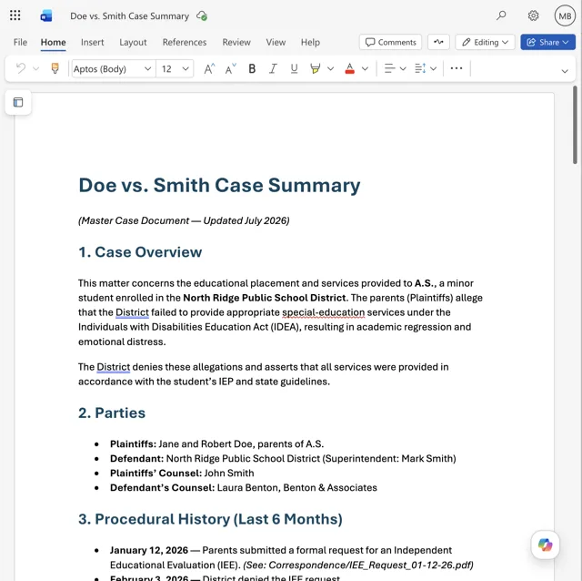

Demystifying AI · Session Resources
Tools & Resources
A resource site for attendees of the 22nd National Academy for IDEA ALJs & IHOs · July 23, 2026
Presented by Mark Beekman, Former PwC Technology Partner
Last updated: July 2026Get the Tools
Start with the office tools you already have. They come with enterprise privacy and security protections built in — and you may be one subscription tier away from the AI features.

Microsoft Copilot
AI inside Word, Outlook, and Excel. If your organization runs Microsoft 365, start here.

Google Workspace + Gemini
AI inside Gmail, Docs, and Sheets. If your organization runs Google, start here.

ChatGPT · OpenAI

Claude · Anthropic
Gemini · Google

NotebookLM · Google
Works only from the documents you give it to reduce hallucinations.
For the strongest security, use an enterprise, Team, or Edu plan procured under a signed agreement — never a free or consumer account. When in doubt, ask your IT department or provider.
Learn the Skills
Free, self-paced training from the platform providers themselves. An hour with any one of these will noticeably improve your results.
OpenAI Academy
Free courses on using ChatGPT effectively, from beginner up.
Microsoft Learn: Copilot
Guided training paths for Copilot in Word, Outlook, and Excel.


Google: AI & Prompting
Short courses on working with Gemini and writing effective prompts.
Prompt Guidance
Build every prompt on the R-C-T-F-C framework. The more parts you provide, the closer the first response lands — the starter prompt below is this framework, filled in.
Case Brain
Before you prompt, give the AI somewhere to stand. One Project (or folder) per matter, plus two standing documents — one that governs how it writes, one that keeps it current on the case. Together they are the case's "brain."



Where: A Copilot Project, or a dedicated matter folder.
Stay Current
The models update roughly monthly. Follow the sources directly — or, for a hands-off brief, set up the routine below.
If your AI tool supports recurring prompts — variously called tasks, scheduled prompts, or routines — set this to run weekly. If it doesn't, or your organization has it turned off, just paste it in each Monday. It works the same either way.
Every Monday at 8:00 a.m., search the past week for AI developments relevant to that role, and cover all five areas:
1. Models and tools — significant releases or changes from OpenAI, Anthropic, Google, and Microsoft, and what actually changed for an everyday user.
2. AI in the courts — new court rules, standing orders, and judicial or bar ethics opinions on AI use; sanctions or discipline involving AI-generated filings or fabricated citations.
3. Law and policy — federal and state AI legislation, regulation, and agency guidance, including student data privacy under FERPA and IDEA.
4. AI in special education — how districts are using AI in evaluations, IEP development, and assistive technology; any evidence of bias or disparate impact on students with disabilities; and disputes or decisions raising these issues.
5. AI and evidence — authenticity, deepfakes, and how tribunals are treating AI-generated or AI-assisted evidence and expert testimony.
Format: group the findings by the five areas, at most two bullets per area, in plain language, with one short line on why each item matters to a hearing officer. Include a source link for every item.
Constraints: rely only on announced releases, published reports, court filings, official guidance, and reputable reporting — no rumors, speculation, or vendor marketing. If an area had nothing significant this week, say 'nothing significant' rather than filling space.
Session Materials
Download the session documents.
The One Rule
You are responsible for everything you review, create, and submit. AI assists you; you are ultimately accountable.
You review. You decide. You sign.